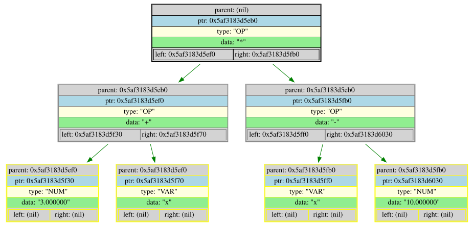

=========================================================================================
Func: InfixParseTreeFromFile
Infix parsed tree
=========================================================================================
=====INIT_INFO=====
FILE: main.cpp /-----/ FUCK: main /-----/ LINE: 28 /-----/ NAME: infix_tree
ERROR_CODE: 0
TreeDump(infix_tree[0x72689bb00030]) {
number_of_elements = 19
}
